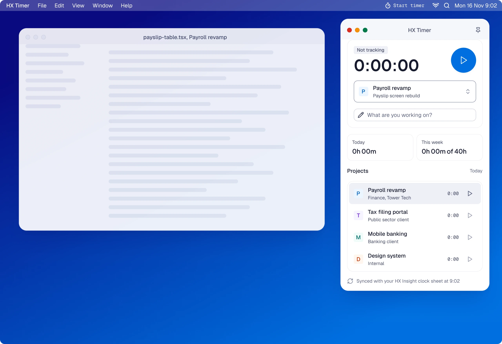
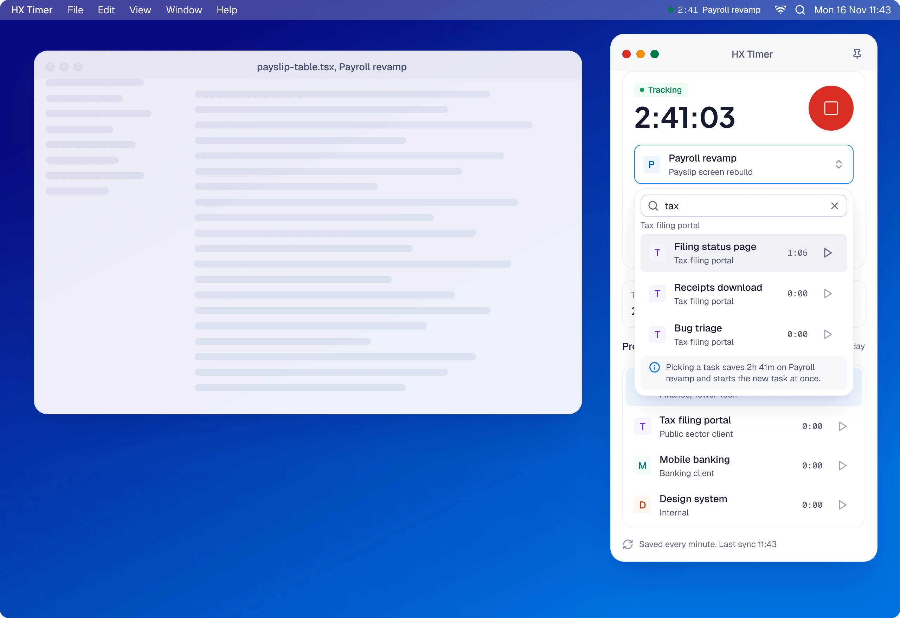
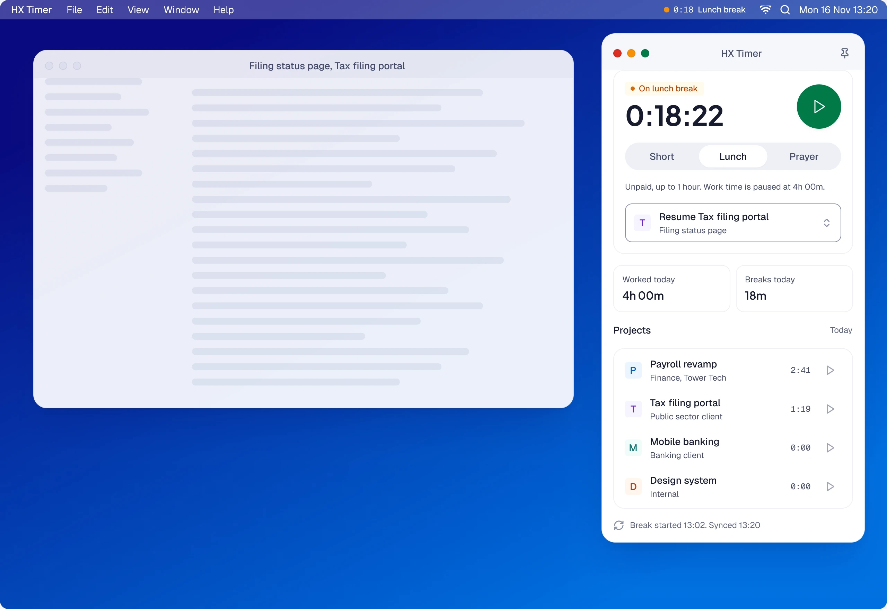
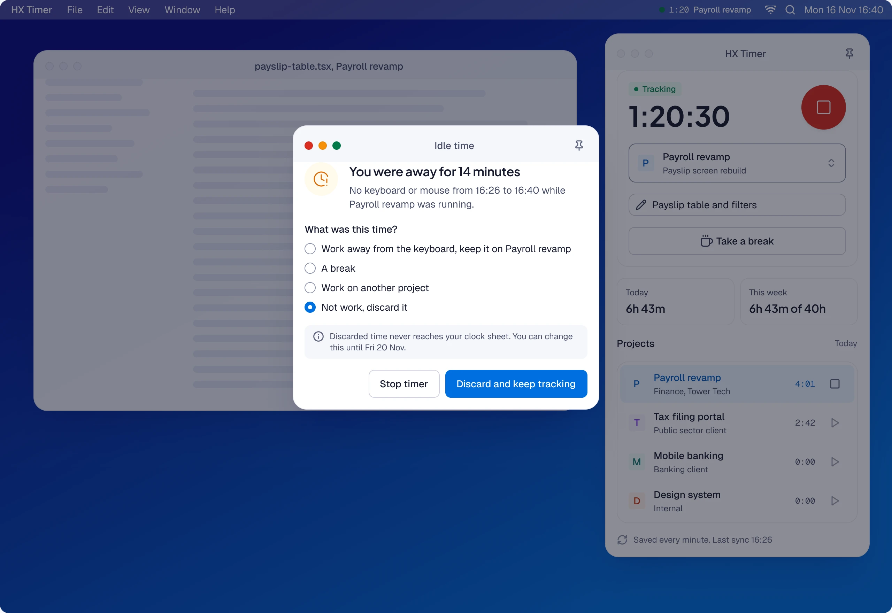
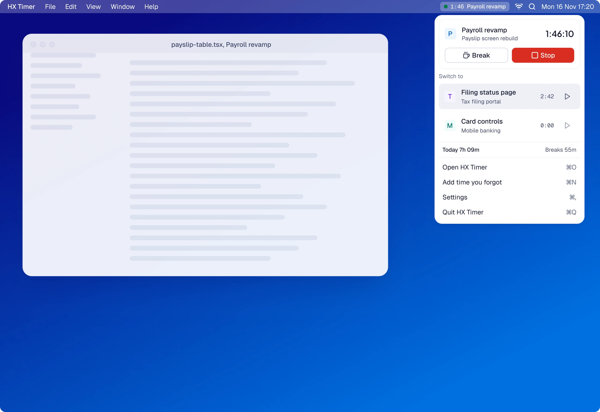
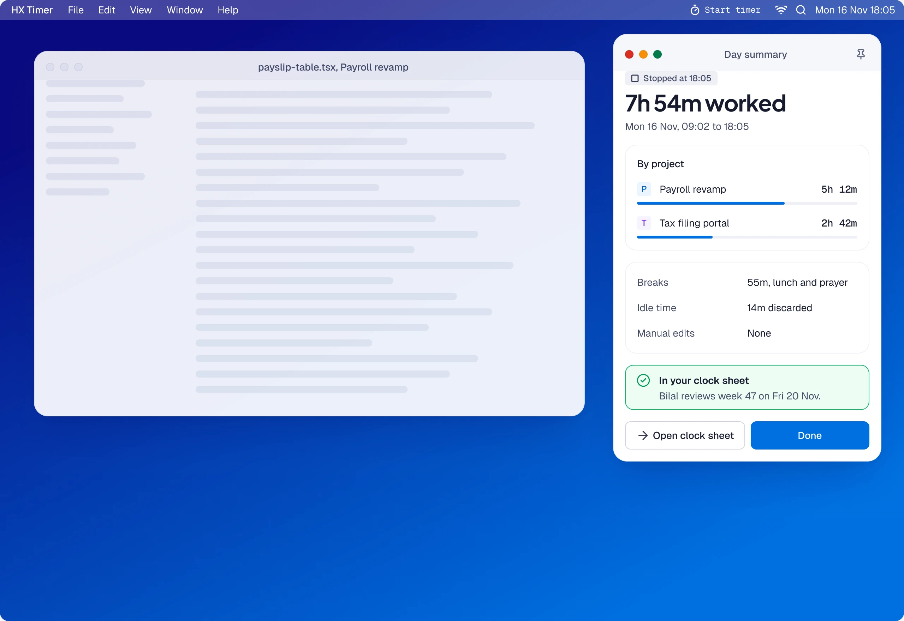

HX Insight · Desktop timer
A small Mac app for tracking time against projects. Start, switch, take a break, handle idle time and end the day. Every entry lands in the HX Insight clock sheet.

Zain’s day, first click to last




09:02 Ready. The window opens with yesterday’s project picked, so starting is one click.
11:42 Tracking. The time runs in the window, in the project row and in the menu bar, with a break one button away.
11:43 Switch. Picking the Tax filing portal task saves Payroll revamp at 2h 41m and starts the new entry in the same click.
13:02 Lunch. Work time stops at 4h 00m and the window shows the break: how long he has been away, and one button back.
16:40 Idle. After ten quiet minutes the app asks what the time was. He discards it, and nothing reaches his clock sheet.
The rest of the day

Everything from the menu bar
Start, stop and switch with the window closed.

End the day, already filed
A summary by project, with breaks and idle time, already in the clock sheet.